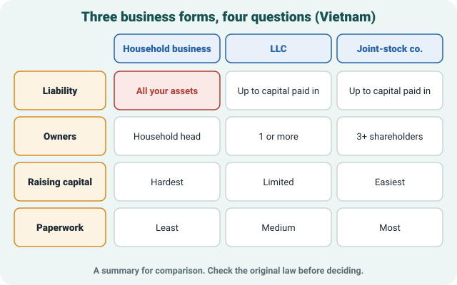

K10 · Digital skills, AI and workplace rules › Level 3 Secure
Legal basics for starting up: from sole trader to company
This lesson completes Sheet 5: Start-up legal checklist. Print template. It helps you ask the right questions. It is not legal advice. The business forms and recent changes described are from Vietnam; other countries have similar choices under different names. Legal sources and the date checked are at the end. How to read regulations is covered in Turn rules into action (N4).
1. Objectives
- Compare a household business, a limited liability company and a joint-stock company with four questions.
- Complete a start-up legal checklist, noting which points need an expert.
2. Retrieval warm-up
- What is the break-even formula?
- Why should you separate the business account from family money?
Answers
- Fixed costs per month ÷ gross profit per unit.
- To know whether the business is really making or losing money.
Review: The survival numbers.
3. Explanation
Choosing a business form is your first legal decision. It affects your risk, how you raise money and what paperwork you must do.
Four questions to compare forms:
- Liability: if the business owes money, how much could you lose?
- Owners: one person, or several contributing together?
- Raising capital: will you need to sell shares to investors?
- Paperwork: can you handle the books and reports that form requires?

In summary, under Vietnam's Law on Enterprises: the owner of a private enterprise is liable with all their own assets. Members of a limited liability company and shareholders of a joint-stock company are liable up to the capital they have contributed. A joint-stock company may issue shares to raise capital.
Three recent changes in Vietnam founders should know:
- Beneficial owners. From 01/7/2025, a business registration file includes a list of beneficial owners, if any. These are the people who actually own or control the business. The business must keep and update this information.
- Tax exemption for new small firms. Resolution 198/2025/QH15 gives small and medium-sized enterprises a 3-year corporate income tax exemption, counted from first registration. Decree 20/2026/ND-CP gives the details.
- End of presumptive tax. From 01/01/2026, household businesses no longer pay tax under the fixed presumptive method.
The conditions for each incentive are set by the implementing texts. Read the originals before counting on them in your plan.
Sheet 5. Checklist before you register
- Business formAnswer the four questions and note why you chose it.
- Line of businessIs it a conditional business line? Which licences are needed?
- ContributorsWho contributes how much, who decides what. Put it in writing.
- Tax, invoicesHow to declare, e-invoices, whether you qualify for incentives.
- Ask an expertWrite specific questions for a lawyer or accountant.
4. Workplace example
Hypothetical scenario (Vietnam). Thu runs a household business selling wooden furniture. A friend wants to invest so they can open a workshop and sell to hotels.
She answers the four questions. Liability: the workshop will take a bank loan, and she does not want to put her whole home at risk. Owners: two people. Raising capital: no outside investors needed for 2 years. Paperwork: she can hire an accounting service.
She leans towards a limited liability company with two or more members. She writes questions for a lawyer: what is the procedure to move from a household business to a company? Can she still get the incentives for new firms?
The two of them write a capital contribution agreement: who contributes how much, who decides what, and what happens if one wants to leave.
Why this works: she decides based on the four questions, not rumours. Her questions for the expert are specific, so the consultation is short and to the point.
5. Practice
Hypothetical scenario. Three young founders are building classroom management software. They plan to raise money from an investment fund next year.
Answer the four questions. Choose a business form and write 3 questions for an expert.
Hint 1
The deciding question here is raising capital. What do investors usually want to buy?
Hint 2
With three people, how to share control and ownership needs to be written down from the start.
Model answer
- Liability: they want it limited to capital contributed.
- Owners: three people.
- Raising capital: yes, next year.
- Paperwork: happy to hire an accountant.
- Leaning towards: a joint-stock company, because it can easily issue shares to investors.
Questions for an expert
- Could our business qualify as an innovative start-up? What are the conditions?
- If one founder leaves after a year, what happens to their shares?
- How do the tax incentives for new small firms apply to us?
(The details are hypothetical.)
6. Self-check
Choose an answer. Every option has an explanation.
Question 1. You are about to take a bank loan to open a workshop, and you do not want your family's assets at risk. Which of the four questions matters most here?
-
Not quite. Paperwork matters, but your worry is how much you could lose if the business owes money.
-
Correct. Correct. The business form decides how far you are liable when the business owes money.
-
Not quite. Here you are borrowing from a bank, not selling shares to investors.
Question 2. Three founders plan to sell shares to an investment fund next year. In Vietnam, which form usually fits better?
-
Not quite. A household business cannot issue shares, and the owner is liable with all their assets.
-
Correct. Correct. A joint-stock company may issue shares to raise capital.
-
Not quite. A private enterprise has only one owner and cannot issue shares.
Question 3. A friend says: "New small companies get 3 years tax-free, so just put it in the plan." What is the most accurate reply?
-
Not quite. The incentive is for SMEs, under conditions set by the implementing texts.
-
Correct. Correct. Resolution 198/2025/QH15 sets the rule; Decree 20/2026/ND-CP gives the details.
-
Not quite. There is. Article 10(4) of Resolution 198/2025/QH15 provides a 3-year exemption.
Question 4. Why write a capital contribution agreement with your co-founder from the start?
-
Not quite. It is not about losing trust. A written agreement prevents misunderstandings when things change.
-
Correct. Correct. These things are easy to agree on while everything is going well.
-
Not quite. Disputes between founders can happen long before any investor arrives.
7. Reflection
- If your business ran up a large debt, which family assets would be at risk?
- Have you written an agreement with the people you work with?
8. Real-world application
In the next 7 days, complete Sheet 5. Send your list of questions to a lawyer or accountant. Many local authorities run support points for small businesses; ask where you live.
Last updated: 14/11/2026. Sources (example: Vietnam, checked 14/11/2026): Law on Enterprises No. 59/2020/QH14, in force from 01/01/2021; amended by Law No. 03/2022/QH15 and Law No. 76/2025/QH15 (issued 17/6/2025, in force from 01/7/2025). Still in force. Law 76/2025/QH15 adds rules on beneficial owners. Resolution 198/2025/QH15 on special mechanisms and policies to develop the private economy. Issued and in force on 17/5/2025. Article 10(4): 3-year corporate income tax exemption for SMEs. Article 10(6): presumptive tax ends from 01/01/2026. Decree 20/2026/ND-CP, issued 15/01/2026, guiding Resolution 198/2025/QH15. This lesson only summarises the main points. The detailed conditions are in the original and implementing texts.
9. Metadata
| skill | K10 · Digital skills, AI and workplace rules |
|---|---|
| level | Level 3 · Secure |
| group | N7 |
| framework_map | EntreComp: Mobilising resources; Ethical and sustainable thinking; CSfW: 1b Work with roles, rights and protocols; WEF: Technological literacy; DigComp 3.0 (reference only) |
| original | Vietnamese version |
| updated | 2026-11-14 |
Finish the lesson
Mark it as done and the site suggests reviews after 1, 3 and 7 days. The data stays on your device only.
Suggested reviews: